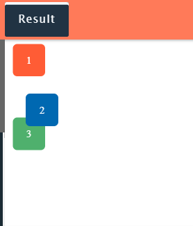

What are the steps by steps differences between relative, absolute, and fixed positioning?
Before we proceed with the step by step explaination. Let's start by talking about the normal flow of the document first, as this would relate to the positioning in CSS. I will further discuss and demonstrate each one of them orderly.
The normal flow of a document
Imagine you're building a webpage, and you start by adding different elements like text, images, and buttons. These elements naturally follow a certain order as you add them in your HTML code. This natural order is what we call the "normal flow of the document." So, when you don't do anything special with positioning in CSS, all your elements just follow this natural order. They stack on top of each other or go side by side, depending on how you've structured your HTML. For example, if you have a heading followed by a paragraph, the paragraph will naturally appear below the heading because that's the order you wrote them in your HTML. Now, when we talk about changing the positioning of elements using CSS, we're basically saying we want to break away from this natural flow. We might want an element to be somewhere specific on the page, like in the corner or right in the middle, instead of where it would naturally go. That's when we use different positioning techniques like relative, absolute, or fixed positioning. These techniques let us move elements around and position them wherever we want on the page, regardless of their natural order in the HTML. So, the "normal flow of the document" is like the default way elements are arranged on a webpage, following the order you put them in your HTML. And when we talk about positioning in CSS, we're talking about breaking away from this default and arranging elements in different ways to create the layout we want.
What is positioning?
Hey, you know when we're creating a webpage and we want to place things like text, images, or buttons exactly where we want them on the page? Well, that's where positioning in CSS comes in! Think of it like arranging furniture in a room. By default, when we add stuff to our webpage, like text or images, they just line up one after the other, kind of like how furniture might be placed in a room with no particular plan. But sometimes, we want to get a bit more creative with how things are laid out. Maybe we want to move a picture to the left side of the page or have a button stay at the bottom no matter how much we scroll. That's where CSS positioning comes into play.
Static Positioning: By Default
Static positioning is the default positioning for all elements on a webpage. When you don't specify any positioning for an element, it's automatically positioned statically. This means the element appears in the normal flow of the document, exactly where it appears in the HTML code. You don't need to use any special CSS rules to achieve static positioning because it's the default behavior. Essentially, static positioning is the "hands-off" approach where you let the browser decide where the element should be placed in the page layout.
HTML EXAMPLE:
CSS EXAMPLE:
RESULT:
As you can see on the diagram provided, it shows that the coloured squares are stacking one by one from top to bottom. That is due to the (div) element used because this is a block element, which is the generic container for flow content.
Relative Positioning:
Imagine you have an element on a webpage, like a button or an image. If you want to slightly adjust where this element appears on the page without affecting everything else, you use relative positioning. So, you tell your browser, "Hey, I want this element to stay in its normal place, but I want it to move a bit from there." You do this by saying position: relative; in your CSS for that element. Then, you can use properties like top, bottom, left, or right to nudge the element up, down, left, or right from its normal position.
Then, there's "relative" positioning, it is kind of like letting us move things around a bit from their normal spot on the page.
For instance: We set the blue squared into relative position and added the offset data value of top = 30px & left = 30px to change its position.
CSS EXAMPLE: BLUE SQUARE
RESULT:
As you can see from the result, we noticed that the blue square moved away by 30px from the top and from the red square, as it is going down. It also moved away from the left by 30px going to the right side without affecting the other coloured square, as it overlaps from it and ignoring their existence.
Absolute Positioning:
Now, let's say you want an element to be in a specific spot on your page, no matter what. You use absolute positioning for that. You tell your browser, "Forget about where this element should be in the page flow. I want it to be in a certain place, relative to its closest positioned ancestor or the whole page itself." You do this by saying position: absolute; in your CSS for that element. Then, you can use properties like top, bottom, left, or right to specify exactly where you want the element to be, relative to its closest positioned ancestor or the whole page.
Let say "Absolute" positioning lets us place things exactly where we want them, kind of like picking up a piece of furniture and putting it in a specific corner of the room.
For instance: We positioned the element into absolute with offset data value of top = 20px and left 30px; is positioned relative to the container. let's see how the blue square react from its declaration.
HTML EXAMPLE:
CSS EXAMPLE:

RESULT:
It shows from the result diagram that the blue square is placed inside a gray container. The reason for this is that, as the container is the blue square's nearest ancestor element, the blue square is positioned in relation to it. In addition, when the blue square doesn't have any closest parents or ancestor elements, it will positioned relative to the containing blocks, and moves while being scroll.
Fixed Positioning:
Now, let's say you want something to stick to the screen, no matter if you scroll up or down. That's where fixed positioning comes in. You tell your browser, "I want this element to always be in the same place, no matter where the rest of the page is." You do this by saying position: fixed; in your CSS for that element. Then, you can use properties like top, bottom, left, or right to specify where you want the element to stick on the screen, and it'll stay there even if you scroll.
For instance: We applied relative position to the container and on the other hand the blue square is set to fixed position. Let's check how it reacted from the result diagram.
CSS EXAMPLES:
RESULT:
Looking at the result, we can see that the blue square ignored the container relative position applied. This is because the blue sqaure is specified by positioned fixed, which means it will not respect any containers and will totally ignore the elements closed by. It will just stay from where it is being positioned, and whenever you scroll down and up, it will gong to be visible on the window screen and the rest of the squares will disappear, as we scroll up and down. It just moves freely and anywhere around the viewport.
In summary:
Static positioning is the default behavior where elements appear in the normal flow of the document.
Relative positioning lets you adjust an element's position relative to where it would normally be.
Absolute positioning lets you place an element exactly where you want it, relative to its closest positioned ancestor or the whole page.
Fixed positioning keeps an element in the same spot on the screen, even if you scroll up or down.